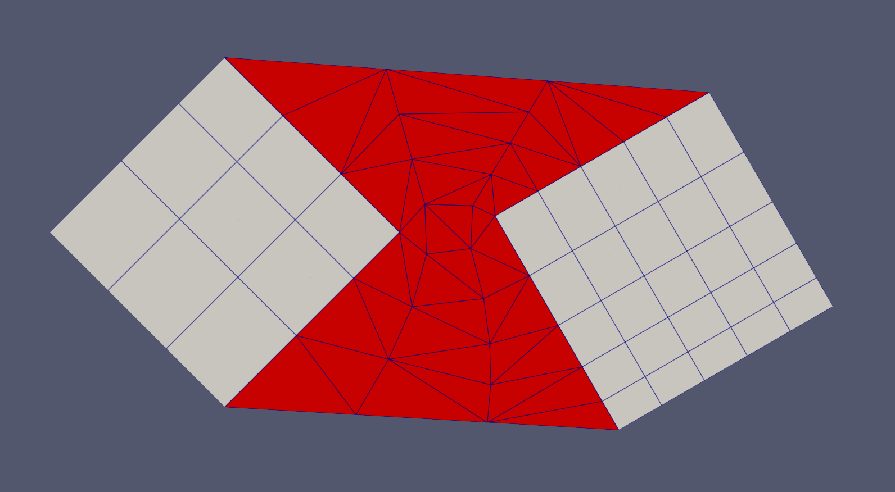

- boundary_1the first boundary that needs to be connected.
C++ Type:std::vector<BoundaryName>
Controllable:No
Description:the first boundary that needs to be connected.
- boundary_2the second boundary that needs to be connected.
C++ Type:std::vector<BoundaryName>
Controllable:No
Description:the second boundary that needs to be connected.
- input_mesh_1The input mesh that contains boundary_1
C++ Type:MeshGeneratorName
Controllable:No
Description:The input mesh that contains boundary_1
- input_mesh_2The input mesh that contains boundary_2
C++ Type:MeshGeneratorName
Controllable:No
Description:The input mesh that contains boundary_2
- num_layersNumber of layers of elements created between the boundaries.
C++ Type:unsigned int
Range:num_layers>0
Controllable:No
Description:Number of layers of elements created between the boundaries.
FillBetweenSidesetsGenerator
This FillBetweenSidesetsGenerator object is designed to generate a transition layer to connect two boundaries of two input meshes.
Overview
The FillBetweenSidesetsGenerator offers similar functionality to FillBetweenPointVectorsGenerator by leveraging FillBetweenPointVectorsTools. Instead of manually inputting the two boundaries "positions_vector_1" and "positions_vector_2", The FillBetweenSidesetsGenerator directly takes boundary information ("boundary_1" and "boundary_2") of two input meshes, "input_mesh_1" and "input_mesh_2". The input meshes can be translated using "mesh_1_shift" and "mesh_2_shift". The generated transition layer mesh can be output as a standalone mesh or a stitched mesh with the input meshes, depending on "keep_inputs".

Figure 1: A typical example of using FillBetweenSidesetsGenerator to connect two square meshes together.
If "keep_inputs" is set as true, the original boundaries of the input meshes defined by "boundary_1" and "boundary_2" are deleted after stitching the input meshes with the generated transition layer mesh.
All the other meshing options are the same as FillBetweenPointVectorsGenerator.
Example Syntax
[Mesh<<<{"href": "../../syntax/Mesh/index.html"}>>>]
[fbsg]
type = FillBetweenSidesetsGenerator<<<{"description": "This FillBetweenSidesetsGenerator object is designed to generate a transition layer to connect two boundaries of two input meshes.", "href": "FillBetweenSidesetsGenerator.html"}>>>
input_mesh_1<<<{"description": "The input mesh that contains boundary_1"}>>> = 'rotate_1'
input_mesh_2<<<{"description": "The input mesh that contains boundary_2"}>>> = 'rotate_2'
boundary_1<<<{"description": "the first boundary that needs to be connected."}>>> = 'top right'
boundary_2<<<{"description": "the second boundary that needs to be connected."}>>> = 'left top'
mesh_1_shift<<<{"description": "Translation vector to be applied to input_mesh_1"}>>> = '-1.5 0.5 0.0'
mesh_2_shift<<<{"description": "Translation vector to be applied to input_mesh_2"}>>> = '0.8 -0.3 0.0'
num_layers<<<{"description": "Number of layers of elements created between the boundaries."}>>> = 3
keep_inputs<<<{"description": "Whether to output the input meshes stitched with the transition layer connector."}>>> = false
[]
[]Input Parameters
- begin_side_boundary_id10000Boundary ID to be assigned to the boundary connecting starting points of the positions_vectors.
Default:10000
C++ Type:short
Controllable:No
Description:Boundary ID to be assigned to the boundary connecting starting points of the positions_vectors.
- bias_parameter1Parameter used to set up biasing of the layers: bias_parameter > 0.0 is used as the biasing factor; bias_parameter = 0.0 activates automatic biasing based on local node density on both input boundaries.
Default:1
C++ Type:Real
Unit:(no unit assumed)
Range:bias_parameter>=0
Controllable:No
Description:Parameter used to set up biasing of the layers: bias_parameter > 0.0 is used as the biasing factor; bias_parameter = 0.0 activates automatic biasing based on local node density on both input boundaries.
- block_id1ID to be assigned to the transition layer.
Default:1
C++ Type:unsigned short
Controllable:No
Description:ID to be assigned to the transition layer.
- end_side_boundary_id10000Boundary ID to be assigned to the boundary connecting ending points of the positions_vectors.
Default:10000
C++ Type:short
Controllable:No
Description:Boundary ID to be assigned to the boundary connecting ending points of the positions_vectors.
- gaussian_sigma3Gaussian parameter used to smoothen local node density for automatic biasing; this parameter is not used if another biasing option is selected.
Default:3
C++ Type:Real
Unit:(no unit assumed)
Range:gaussian_sigma>0.0
Controllable:No
Description:Gaussian parameter used to smoothen local node density for automatic biasing; this parameter is not used if another biasing option is selected.
- input_boundary_1_id10000Boundary ID to be assigned to the boundary defined by positions_vector_1.
Default:10000
C++ Type:short
Controllable:No
Description:Boundary ID to be assigned to the boundary defined by positions_vector_1.
- input_boundary_2_id10000Boundary ID to be assigned to the boundary defined by positions_vector_2.
Default:10000
C++ Type:short
Controllable:No
Description:Boundary ID to be assigned to the boundary defined by positions_vector_2.
- keep_inputsTrueWhether to output the input meshes stitched with the transition layer connector.
Default:True
C++ Type:bool
Controllable:No
Description:Whether to output the input meshes stitched with the transition layer connector.
- mesh_1_shift0 0 0Translation vector to be applied to input_mesh_1
Default:0 0 0
C++ Type:libMesh::Point
Controllable:No
Description:Translation vector to be applied to input_mesh_1
- mesh_2_shift0 0 0Translation vector to be applied to input_mesh_2
Default:0 0 0
C++ Type:libMesh::Point
Controllable:No
Description:Translation vector to be applied to input_mesh_2
- use_quad_elementsFalseWhether QUAD4 instead of TRI3 elements are used to construct the transition layer.
Default:False
C++ Type:bool
Controllable:No
Description:Whether QUAD4 instead of TRI3 elements are used to construct the transition layer.
Optional Parameters
- enableTrueSet the enabled status of the MooseObject.
Default:True
C++ Type:bool
Controllable:No
Description:Set the enabled status of the MooseObject.
- save_with_nameKeep the mesh from this mesh generator in memory with the name specified
C++ Type:std::string
Controllable:No
Description:Keep the mesh from this mesh generator in memory with the name specified
Advanced Parameters
- nemesisFalseWhether or not to output the mesh file in the nemesisformat (only if output = true)
Default:False
C++ Type:bool
Controllable:No
Description:Whether or not to output the mesh file in the nemesisformat (only if output = true)
- outputFalseWhether or not to output the mesh file after generating the mesh
Default:False
C++ Type:bool
Controllable:No
Description:Whether or not to output the mesh file after generating the mesh
- show_infoFalseWhether or not to show mesh info after generating the mesh (bounding box, element types, sidesets, nodesets, subdomains, etc)
Default:False
C++ Type:bool
Controllable:No
Description:Whether or not to show mesh info after generating the mesh (bounding box, element types, sidesets, nodesets, subdomains, etc)